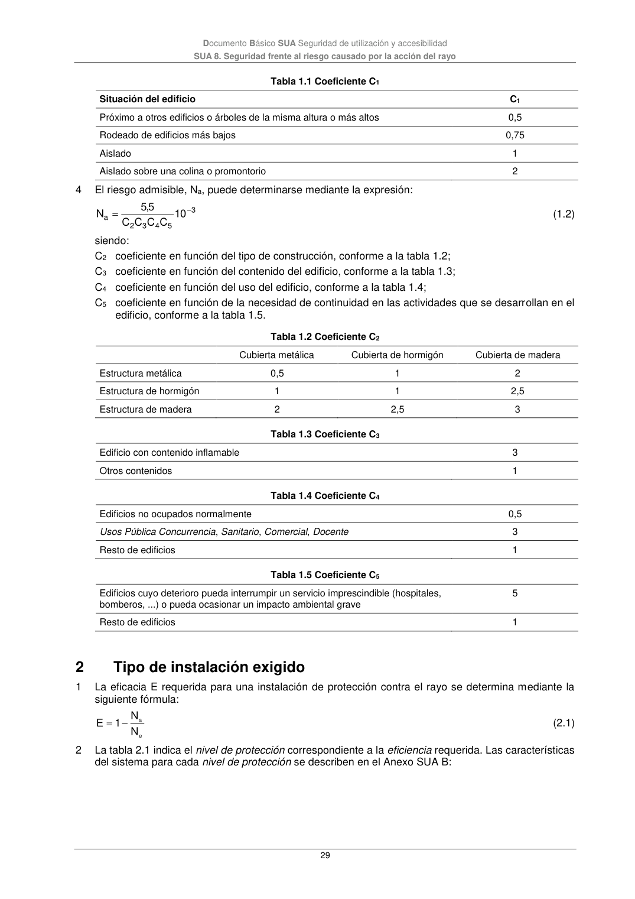

DB-SUA · 2 Tipo de instalación exigido · versión 2022-06-14
SHA256: 3cfb5bbb135e8f02faebd8b844e03e8947994c18d4c9e675a7d2aa37d1cd5958 · página física 29 de 47 · métodos de encabezado
solo si están cotejados.
Formatos: Markdown · JSON de bloques · PDF p. 29 · imagen PNG
Documento Básico SUA Seguridad de utilización y accesibilidad SUA 8. Seguridad frente al riesgo causado por la acción del rayo 29 Tabla 1.1 Coeficiente C1 Situación del edificio C1 Próximo a otros edificios o árboles de la misma altura o más altos 0,5 Rodeado de edificios más bajos 0,75 Aislado 1 Aislado sobre una colina o promontorio 2 4 El riesgo admisible, Na, puede determinarse mediante la expresión: 3 5 4 3 2 a 10 C C C C 5,5 N (1.2) siendo: C2 coeficiente en función del tipo de construcción, conforme a la tabla 1.2; C3 coeficiente en función del contenido del edificio, conforme a la tabla 1.3; C4 coeficiente en función del uso del edificio, conforme a la tabla 1.4; C5 coeficiente en función de la necesidad de continuidad en las actividades que se desarrollan en el edificio, conforme a la tabla 1.5. Tabla 1.2 Coeficiente C2 Cubierta metálica Cubierta de hormigón Cubierta de madera Estructura metálica 0,5 1 2 Estructura de hormigón 1 1 2,5 Estructura de madera 2 2,5 3 Tabla 1.3 Coeficiente C3 Edificio con contenido inflamable 3 Otros contenidos 1 Tabla 1.4 Coeficiente C4 Edificios no ocupados normalmente 0,5 Usos Pública Concurrencia, Sanitario, Comercial, Docente 3 Resto de edificios 1 Tabla 1.5 Coeficiente C5 Edificios cuyo deterioro pueda interrumpir un servicio imprescindible (hospitales, bomberos, ...) o pueda ocasionar un impacto ambiental grave 5 Resto de edificios 1 2 Tipo de instalación exigido 1 La eficacia E requerida para una instalación de protección contra el rayo se determina mediante la siguiente fórmula: e a N N 1 E (2.1) 2 La tabla 2.1 indica el nivel de protección correspondiente a la eficiencia requerida. Las características del sistema para cada nivel de protección se describen en el Anexo SUA B:
